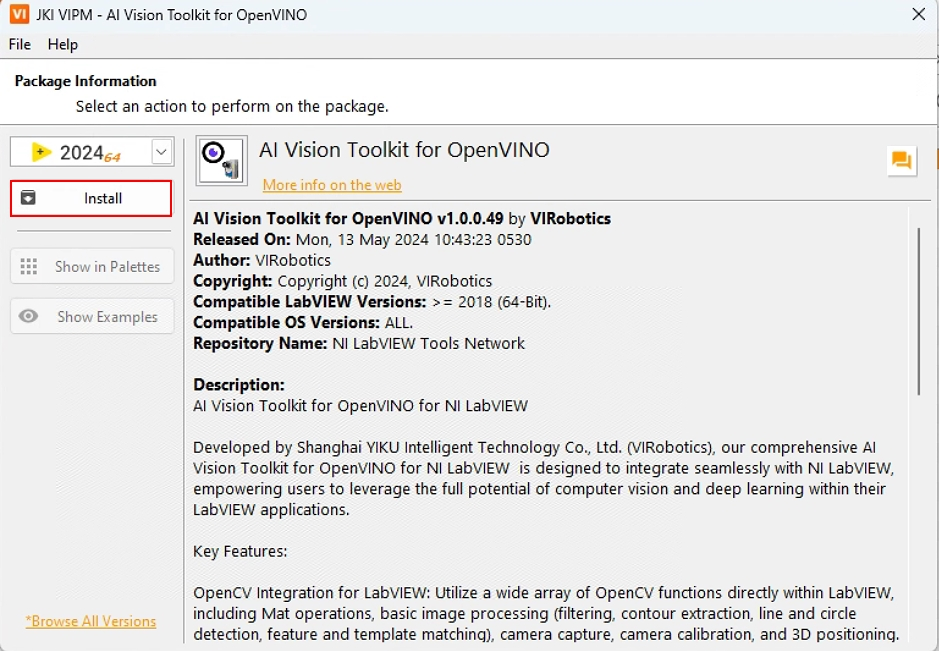

安装指南
系统要求
开发系统
操作系统：Windows 10（x64）及以上版本。
CPU：基于Intel x86的架构（推荐使用第10代及以上处理器）。
内存：8GB（推荐使用16GB及以上）。
显卡：Intel显卡（集成显卡如Intel Iris Xe Graphics，独立显卡如A770）。
部署系统
操作系统：Windows 10（x64）及以上版本。
CPU：基于Intel x86的架构（推荐使用第10代及以上处理器）。
内存：8GB（推荐使用16GB及以上）。
显卡：Intel显卡（集成显卡如Intel Iris Xe Graphics，独立显卡如A770）。
软件要求
LabVIEW： 2018（64位）及以上版本。
附加工具包： NI Vision Development Module（NI视觉开发模块）。
注意：运行工具包中的一些示例需要此工具包。
VIPM：安装过程中VIPM（VI包管理器）必须以管理员身份运行，以处理依赖项和工具包设置。
安装步骤
请按照以下步骤操作并安装工具包。
关闭电脑中的所有安全防护软件；
下载AI Vision Toolkit for OpenVINO(以下简称：AIVT-OV)：以管理员身份运行VIPM，在VIPM中搜索关键字：AI Vision Toolkit ，可以找到工具包安装包，如下图所示；
（注意：如果你不想在VIPM中下载AIVT-OV，可以在此链接中下载）

双击“ai_vision_toolkit_for_openvino”，点击Install;
此时开始下载该工具包

选择接受许可协议；

如下图所示即安装完毕，点击Finish即可；

到这里您已经使用VIPM成功安装了AIVT-OV，现在您可以在LabVIEW中开始您的深度学习旅程了。
如果您在安装过程中遇到任何问题或有任何疑问，请联系我们的支持团队寻求帮助。联系邮箱：support@virobotics.net
发行说明
AIVT-OV工具包不断更新。 最新发行说明可在VIPM中搜索。